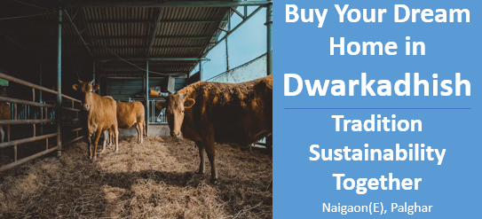

अपने सपनों का घर खरीदें द्वारकाधीश में: परंपरा। स्थिरता। साथ मिलकर।
पर्यावरण और स्थिरता के लाभ
एक आधुनिक अपार्टमेंट कॉम्प्लेक्स में गौशाला का समावेश एक स्थायी जीवनशैली को बढ़ावा देता है, क्योंकि यह जैविक कचरे को रिसायकल करता है और पर्यावरणीय प्रभावों को कम करता है। गाय का गोबर बागवानी और फसलों के लिए प्राकृतिक खाद के रूप में उपयोग किया जा सकता है, जिससे रासायनिक उर्वरकों की आवश्यकता कम होती है। इसके अलावा, इसे बायोगैस में बदला जा सकता है, जो समुदाय के लिए नवीकरणीय ऊर्जा का स्रोत प्रदान करता है। गौशाला प्राकृतिक कचरा प्रबंधन को बढ़ावा देकर, कार्बन उत्सर्जन को कम करके और एक अधिक आत्मनिर्भर, कम प्रभावी जीवनशैली को बढ़ावा देकर पर्यावरणीय रूप से अनुकूल जीवन को प्रेरित करती है, जो आधुनिक स्थिरता के लक्ष्यों के अनुरूप है।
प्राकृतिक दुनिया से जुड़ने का अहसास
एक शहरी अपार्टमेंट परिसर में गोशाला का होना निवासियों को प्रकृति से फिर से जुड़ने का एक अनोखा अवसर प्रदान करता है। शहर के तेज़-तर्रार माहौल में, यह आसान होता है कि हम प्राकृतिक दुनिया से दूर हो जाएं। गोशाला शहरवासियों, खासकर बच्चों, को यह अनुभव करने का मौका देती है कि जानवरों की देखभाल कैसे की जाती है, कचरे को कैसे संसाधित किया जाता है और प्राकृतिक चक्र कैसे काम करते हैं। यह प्रकृति से जुड़ाव पर्यावरण की देखभाल की भावना को बढ़ाता है और निवासियों को स्थायी जीवनशैली के महत्व को बेहतर ढंग से समझने में मदद करता है।
निष्कर्ष
आधुनिक अपार्टमेंट कॉम्प्लेक्स में गौशाला का समावेश स्थिरता, सांस्कृतिक धरोहर, और सामुदायिक भलाई का एक अद्वितीय मिश्रण प्रस्तुत करता है। यह न केवल पर्यावरण को लाभ पहुंचाता है, बल्कि निवासियों के बीच जिम्मेदारी, सहानुभूति और आपसी संबंधों की भावना भी उत्पन्न करता है, जिससे यह स्थायी शहरी जीवन का एक आदर्श बनता है। परंपरा और आधुनिकता का यह संगम एक ऐसे समुदाय का निर्माण करता है जो नैतिक जीवन और प्रकृति के साथ सामंजस्यपूर्ण संबंधों को महत्व देता है।
Contact us
+91 72088 43484 / +91 72088 43487
kkcreateandbiuld@gmail.com
Radha Nilaya, Plot No. 164/2,
Bapane Village, Chandrapada Road,
Naigaon (E) - 401208,
Maharashtra, India.